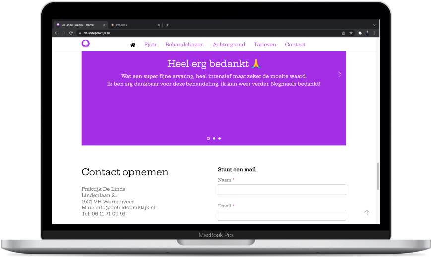
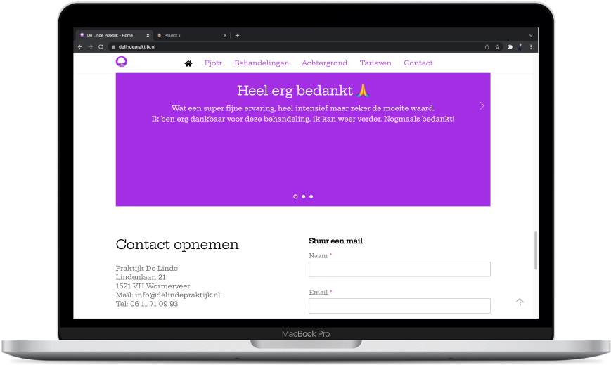

De opdracht
Voor Pjotr Rentinck heb ik de identiteit en website van zijn holistische praktijk 'De Linde Praktijk' ontwikkeld. Voor mij de eerste offciële opdracht buiten school om.
Het proces en resultaat
Ik heb een voor mij leerzaam proces doorlopen om tot het eindresultaat te komen. Dit proces ging in een aantal stappen. Het eerste waar ik mee begon was het ontwerpen van 3 totaal verschillende logo's in nauw contact met de opdrachtgever. Door duidelijk en regelmatig te communiceren kon ik aan de wensen van de klant voldoen. Hierna volgde bepaling van de huisstijl, die ik deels afleidde uit de kleur en font van het logo. De volgende stap was het opzetten van de website (hosting, themify-setup en thema). Na het opzetten kon ik beginnen aan de website. De teksten waren op dat moment al geschreven, foto's nog niet. Dit was de eerste keer dat ik een wordpress-site maakte, dus dit ging niet zonder slag of stoot. Via WhatsApp hield ik nogsteeds regelmatig contact met mijn opdrachtgever over de progressie. Op een gegeven moment moest ik communiceren met een fotograaf voor de benodigde foto's. Toen styling, teksten en foto's toegevoegd waren aan de website had ik een eindopleveringsgesprek met opdrachtgever en fotograaf. Zij hadden een aantal feedbackpunten. Na verwerking van deze feedback in de website, hebben we contact gehad en zijn we tot het eindresultaat gekomen: een logo en een responsive website.
 


Grootste leerpunten
- Opzetten van branding
- Onderhouden van klantcontact
- Contact met zowel tekstschrijver als fotograaf
- Werking en opzetten van wordpress